WEEK 5: THE BEST WE COULD DO, PART 2

An illustration of Bui and her mother from the text. It shows them discussing the past at a table while Bui's mother is drinking coffee or tea.
Estimated Completion Time: 120 minutes
Semester-at-a-Glance:
| Module | Week | Date | Topics | Reading | Assignments & Assessments | Assignment Due Dates |
| Module 2 |
Week 5 | February 3-9 | Thi Bui's The Best We Could Do (2017) | Chs. 4-6 (pp. 91-210) | --- | --- |
| Module 3 |
Week 6 | February 10-16 | Miné Okubo's Citizen 13660 (2014) | Pages 3-99 | Quiz 1 (10%) | February 16 at 11:59 pm (EST) |
| Week 7 | February 17-23 | Miné Okubo's Citizen 13660 (2014) | Pages 100-209 | --- | --- | |
READING WEEK |
February 24 - March 2 | |||||
| Module 4 | Week 8 | March 3-9 | George Takei's They Called Us Enemy (2019) | Pages 1-108 | Personal Reading Response 2 (20%) | March 9 at 11:59 pm (EST) |
| Week 9 | March 10-16 | George Takei's They Called Us Enemy (2019) | Pages 109-205 | --- | --- | |
| Module 5 |
Week 10 | March 17-23 |
Guy Delisle's Hostage (2017) |
Pages 1-97 | Group Discussion (20%) | March 23 at 11:59 pm (EST) |
| Week 11 | March 24-30 |
Guy Delisle's Hostage (2017) |
Pages 99-193 | --- | --- | |
| Module 6 |
Week 12 | March 31 - April 6 | Marjane Satrapi's Persepolis (2004) |
Pages 3-71 | Personal Memoir and Analysis (30%)--IF YOU WANT FEEDBACK ON THE PROJECT | April 6 at 11:59 pm (EST) |
| Week 13 | April 7-13 | Marjane Satrapi's Persepolis (2004) |
Personal Memoir and Analysis (30%) | April 13 at 11:59 pm (EST) | ||
| Week 14 | April 14-20 | Course Administrative Matters | --- | Quiz 2 (10%) |
April 20 at 11:59 pm (EST) Please note that because grades must be submitted, I cannot offer extensions on this quiz. Any that are not completed by the deadline will receive a grade of 0. |
|
Introduction
Welcome back to Week 5! Last week we focused a bit on character development, trauma, language, and story. This week, we're going to pick up those threads again to consider another avenue through which one's self-identity is constructed: family narratives. The two concepts--trauma legacies and family narratives--are intrinsically tied together in a complex relationship. Someone else's stories become our part of our own within a family context (however it is that you define family--creation or origin).
However, before we can appreciate the complexity of Bui's family history, it's helpful to have a quick crash course on some political history: namely, the Vietnam war. Watch the following video (00:17:48) that gives an overview of Vietnam's history and the events that led up to the war:
Questioning Personal Truth
Chapter 4, "Blood and Rice," deals with Thi's relationship with her father. It's a dynamic that, already, we've sensed lurking just beneath the surface of the narrative. He was the primary care-provider for Thi, so it makes sense that a significant part of the text would be devoted to their relationship.
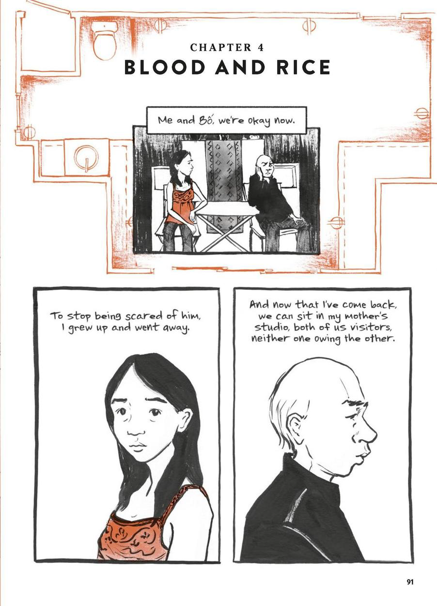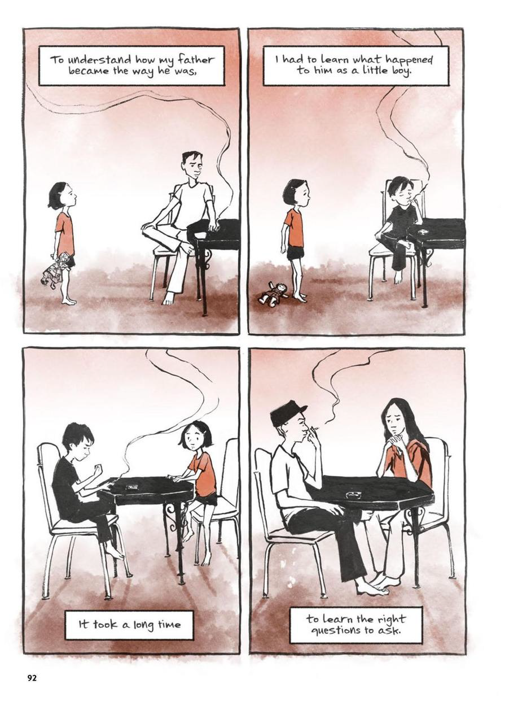
Pages 91-92: the panels depict Bui and her relationship with her father. She explains it took a while to learn not to be afraid of her father, and on page 92, we see the Bui and her father sitting at tables together at different ages.
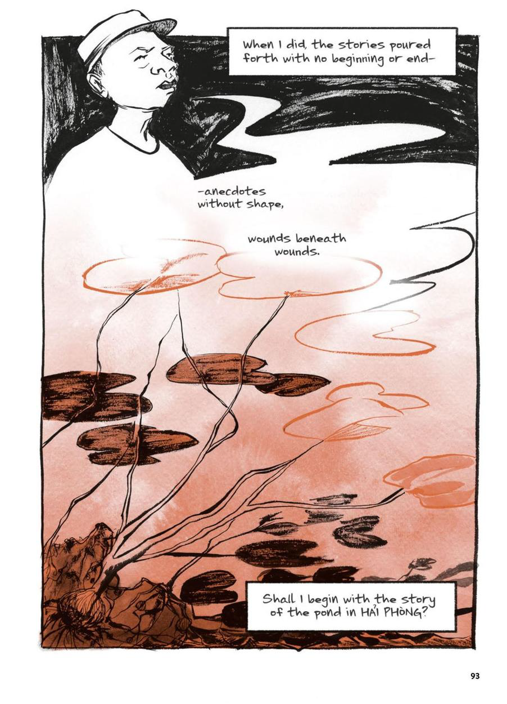
Page 93: a splash page in which Bui's father is illustrated at the top as an adult living in Vietnam. He is smoking, and the smoke trails down to an image of a pond in Vietnam.
Thi states that "it took a long time to learn the right questions to ask" (92), which I find to be an intriguing point within the larger context of how we discuss trauma. Here, Bui suggests that there are "right" and "wrong" ways to come to personal and family trauma narratives. There is also the implication here that such information was not given freely--she had to earn the right to hear her father's history and engage with his story. I'm reminded of a quotation by shame and vulnerability research, Brené Brown: "if we share our shame story with the wrong person, they can easily become one more piece of flying debris in an already dangerous storm."

The same can be said of trauma stories: if we share them (and, in so doing, relive them) with someone who is unsafe, then we can end up doing more harm than good to ourselves. There is a risk inherent in opening up to people and sharing painful stories: they could refuse to believe you, respond poorly, feel personally attacked, be dismissive, etc. There is also a risk that the audience could take on your narrative as part of their own through grief tourism or dark tourism/trauma tourism. While these terms have been used in the past to describe visiting physical locations of grief and trauma, recently they've been re-appropriated to include a type of metaphysical tourism through the narratives and experiences of others. Below is a great video (00:14:27) that discusses how grief tourism functions in a variety of traumatic contexts:
Grief/trauma tourists often derive some type of pleasure from the secondary drama that is involved in participating in your trauma narrative.
So then, here's a question for you: is there a difference between empathy and grief tourism? I would say that there is a difference, and it resides in the relationships amongst spectacle/voyeurism/witnessing and trauma pornography (don't worry, you can click the link--I promise it's just an article). In fact, Fung (2024) has this to say about trauma pornography:
But the truth isn’t always what grabs people. It’s emotion. It’s the catharsis of losing yourself in the misery of others while nothing in your own life has to change. It’s the repressed pleasure of patting yourself on the back for listening to someone explain their daily disadvantages, or maybe giving them the microphone.
Somewhere along the line, we conflated allyship with engagement. And in the rush for representation, trauma became the primary frame of reference for people to understand and sympathize with the ~marginalized~ experience.
Not joy. Not comedy. Not intellect. Always pain.
Also known as “trauma porn”, what distinguishes this phenomenon from a story about trauma is when trauma is approached as an event rather than an experience. Trauma porn is not a category of sexual pleasure, but instead, refers to an alternate definition of pornography that means: “to arouse quick intense emotional response through sensationalized portrayal or activity.”
4.png) |
Self-ReflectionHave you ever met someone who always seems to have a more tragic story to tell than the one that they've just heard? Someone who turns every exchange into a competition of who is more __________? In North America, we often call this type of person a "one-upper." If you can, think of a one-upper in your life. Where do you think one-uppers fall in relationship to empathy, grief tourism, and trauma pornography? What motivations might lay beneath such behaviour? |
Narrative Ruptures
Chapter 5 fascinated me because of what it wasn't. The captions on page 131 (the Chapter 5 title page) begin with: "Writing about my mother is harder for me--" and thus, would leave us to believe that this chapter would be about that relationship.
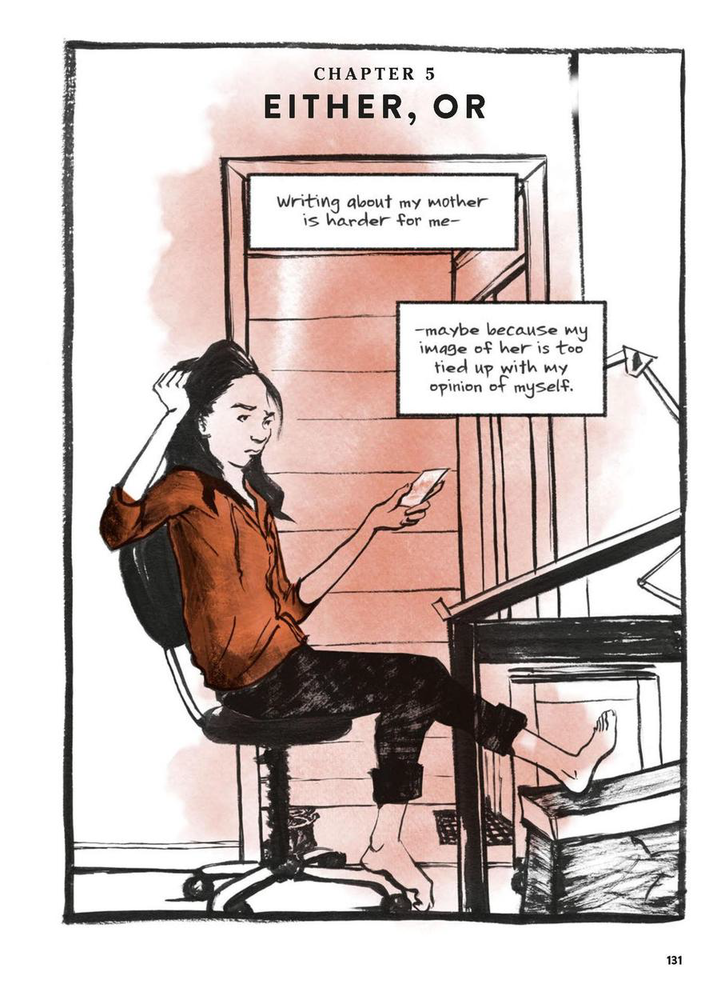
Page 131: Bui sits at her drawing desk while staring at a photograph. She appears frustrated.
But about half way through, Bui subverts the reader's expectations as the narrative is ruptured and shifts rather suddenly. Bui's narrative of her mother's past seems to be progressing as one might expect until page 136, when we encounter a point where the narrative seems to fall apart and silence begins to take over:
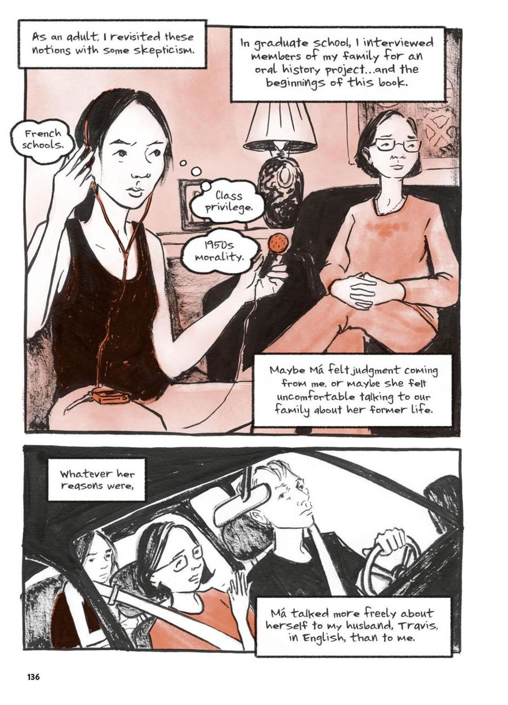
Page 136: In panel one, Bui struggles to get her mother to speak to her about the past. Panel two shows her mother speaking to Bui's husband in the passenger seat of the car, recounting stories about herself.
There is an underlying tension between Bui and her mother that translates into this narrative in the form of silences. On page 136, there is no dialogue between the two women; rather, we read Thi's thoughts and reflections as she narrates. Her mother is notably silent and even looking away from her daughter's gaze. Thi is listening to recordings of her interviews with family members. We don't know specifically if Thi is listening to Má or another relative in this panel, but Má's body language is closed off and disengaged as though she fears her daughter's judgement.
However, we learn that Má is more willing to open up to Travis, Bui's husband. However, it is significant that Bui depicts the conversation taking place in a car: Má and Travis sit side-by-side and don't have to look at one another. This approach is a psychological trick practiced by many parents: when having difficult conversations in the car, people often feel less intimidated and threatened because there isn't a social expectation to look each other in the eyes.
So, to return to our discussion about sharing trauma narratives, Thi gives the reader the impression here that Má shares her past with Thi begrudgingly. Thi hears her mother's narratives through some form of intermediary (audio recorder, her husband), and rarely do we see Má have a conversation about the past with Thi directly. Má's reluctance places Thi in the role of a voyeur or, we might even argue, of a grief tourist. Thi highlights that her role was to listen and to and receive Má's narratives as a type of performance, but not participate actively in the narrative discourse.
The more passive role that Thi occupies in this process is then juxtaposed starkly when Má's narrative is interrupted by Thi herself, who shifts our attention back to Bổ's story:
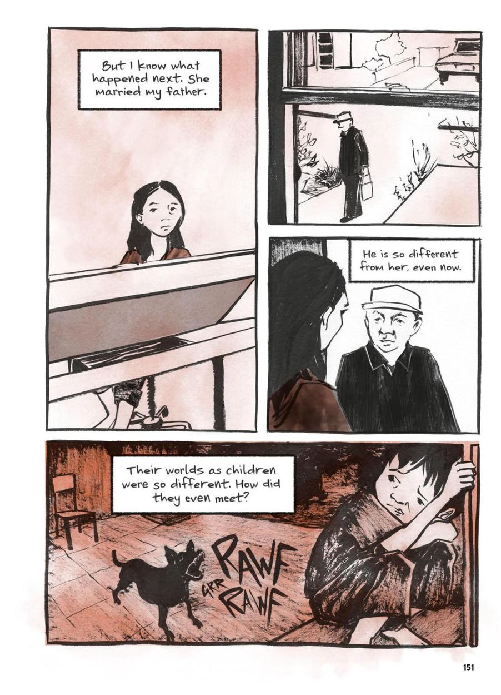
Page 151: the first panel shows Bui now thinking about her father as she shifts the narrative emphasis away from her mother's past and onto the one she knows better: her father's past.
Rather than devoting this entire chapter to her mother's past, Bui weaves in her father's history and how his presence would affect the trajectory of her mother's life. Note the similarities and differences in how the relationship between Bổ and Thi is depicted here, versus her relationship with her mother. Bổ tells his story while walking with Thi (again, side-by-side), but she is an active part of this narrative discourse. She asks questions, and, on page 156, we even see Bổ look at Thi obliquely as he answers her questions and even seems to anticipate criticism or judgments:
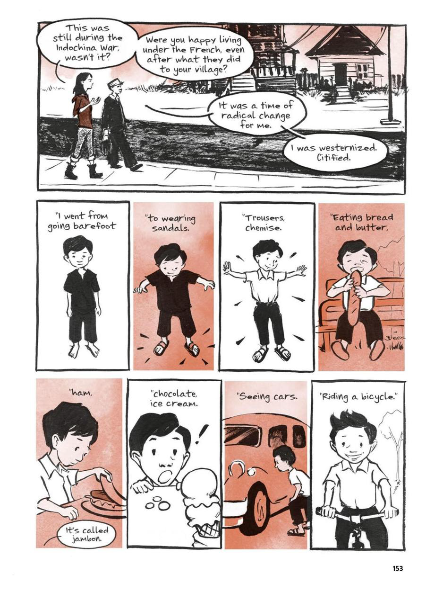
Page 153: Bui's father recounts his childhood becoming "westernized" after moving to Hai Phòng, the third largest city in Vietnam.
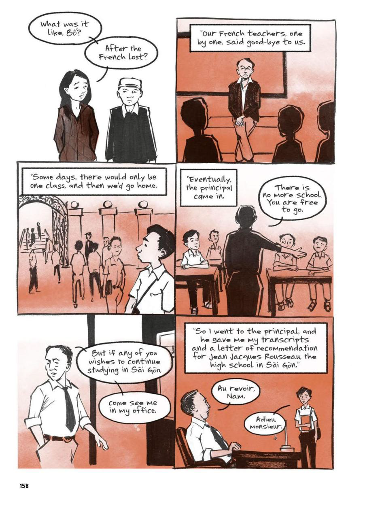
Page 158: the chapter shifts its focus to Bổ's recollections and past when Má's silence takes over and her voice is lost in Bui's narrative
The part that I want to emphasize here is that the form in this chapter reflects its content: Bổ's narrative takes over Má's, just as Bổ took over for Má as the primary caregiver for Thi. The maternal voice is one of silence, where as the paternal voice is one of authority that speaks for the family's history. Much like Bổ dominated the household, his narrative and stories dominate Bui's as she attempts to understand and come to terms with her past.
|
Self-ReflectionIn preparation for the personal memoir assignment (more details on that in the coming weeks), we're going to start considering our narrative identity and how it is formed. STEP 1: Generate a list of different aspects of your self-identity.Imagine that you were speed-dating or constructing an online dating profile. If you had 1 minute to summarize yourself to another person, what roles/labels/adjectives might you use? Here's an example of my own: Roles/Labels:
Adjectives that Describe Me:
STEP 2: Watch the following brief video on narrative identity:
STEP 3: Reflect upon how your narrative identity has been influenced/constructed by significant people in your life and your life experiences (your history).
STEP 4: Re-read your initial list from Step 1.
|
Revisiting the Past
The concept of "THE PAST," or history, is often linked metaphorically with geography.

Image Quote: "The past is a foreign country; the do things differently there."

Image Quote: "Yes, the past is another country, but one that we can visit, and once there we can bring back the things we need."
This idea of "visiting" and "touring" the past is one that emerges in Bổ's narrative and aligns nicely with our previous discussion on grief tourism. On pages 160-161, Bổ recalls the painful experience of visiting his father and relatives:
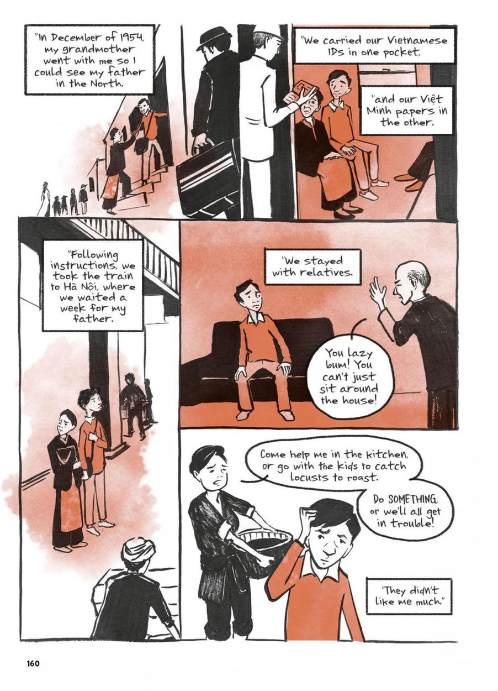
Page 160: the panels show Bui's father visiting his relatives. The relatives call him lazy and he reflects that they didn't like him very much.
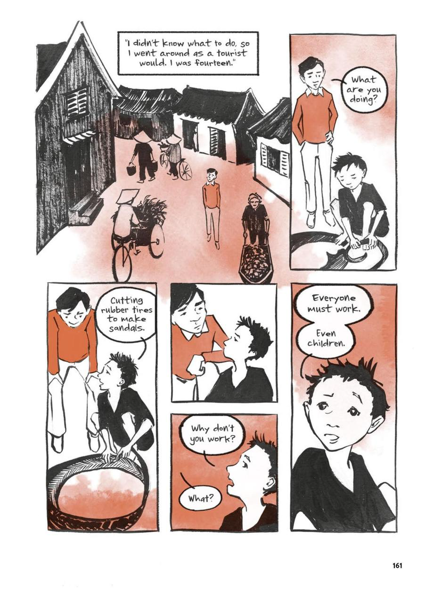
Page 161: Bổ recalls exploring northern Vietnam "as a tourist would." He has an exchange with a small child who is cutting rubber tires to make sandals. The child asks Bổ why he doesn't work
But when we (re)visit the past, is it only the things that we need that come back with us? I would argue that to revisit the past means that we must inevitably confront things that are detrimental to us as well. Certainly, Bổ seems to desire leaving the past (his father) behind him as he embarks upon a new phase of his life:
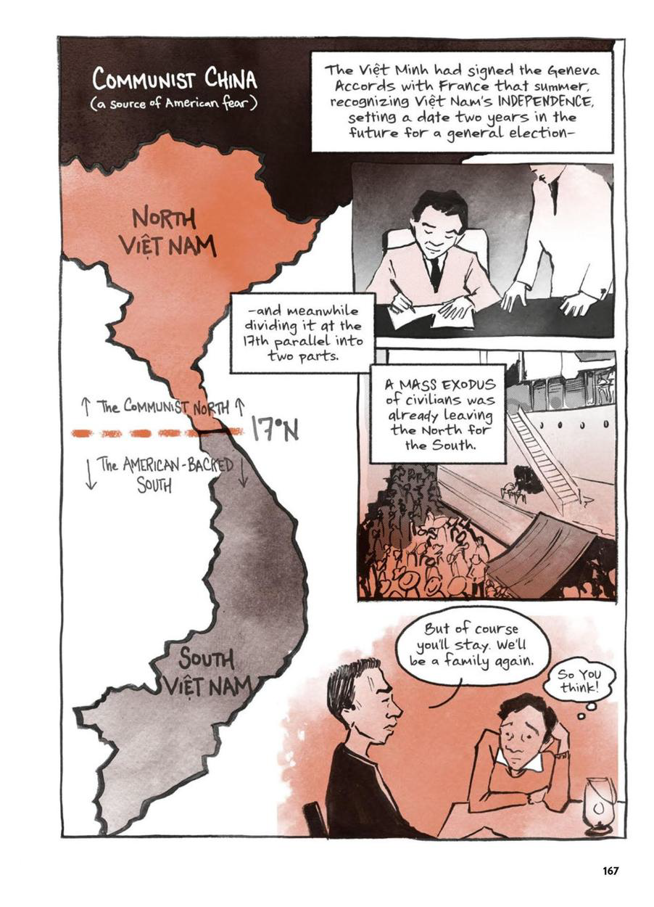
Page 167: The page depicts Vietnam divided into two regions (the Communist North and the American-backed South). Panels along the right depict the signing of the Geneva Accord and the independence of Vietnam. At the bottom, Bổ's father tells Bổ that he will stay with him and that they will be a family again.
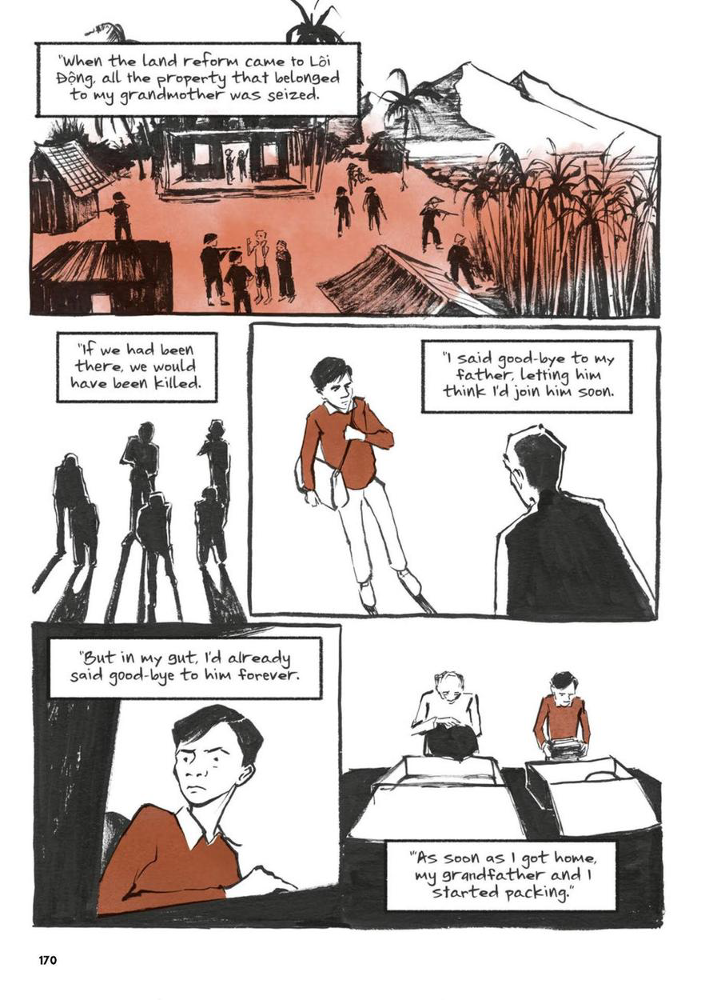
Page 170: Bổ and his grandfather pack to leave Northern Vietnam and Bổ recognizes that he will never see his father again.
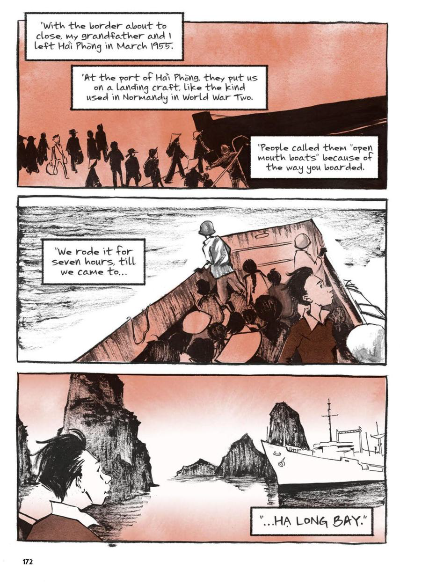
Page 172: Bổ and his grandfather leave Hai Phòng via boat and land in Ha Long Bay
In fact, Chapter 6 demonstrates just how incongruent the past and the present often are, particularly in how people recollect and experience the two. When Thi recalls visiting the first house in which she lived in Vietnam, we see just the past and the present come into conflict with each other:
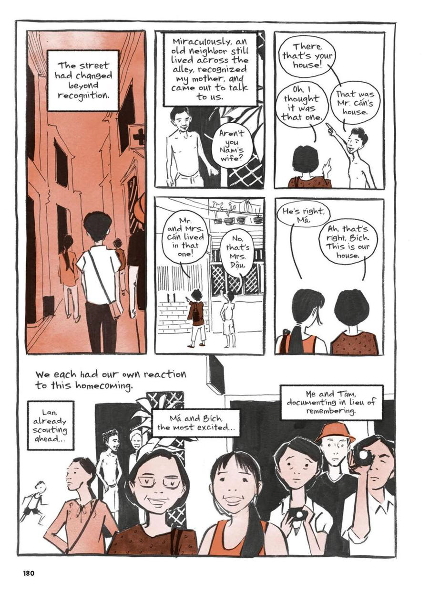
Page 180: the first panel depicts their home in the past; the remaining panels show the family in the present, interacting with their former environment. There are conflicting memories about who lived where and Bui describes herself and Tam "documenting in lieu of remembering."
Because Thi and Tam were so young, they have no proper (or perhaps detailed) memories of this place. To Thi, "at the age of fourteen, it was a home. An address" (178). So, instead of engaging in the process of remembering with the rest of her family, Thi plays the role of the detached historian who documents the visit.
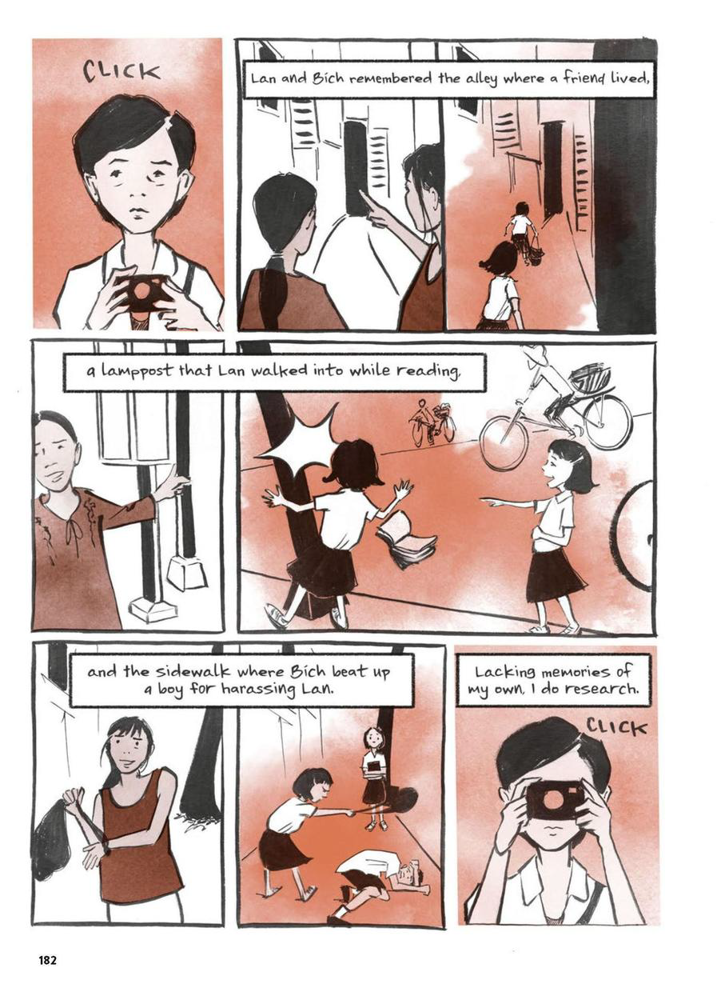
Page 182: The panels show the past and present coming together as Lan and Bich share their memories of incidents that happened in their childhood.
|
Self-ReflectionOn page 182, we see the past and the present come together on the page. How does Bui use colour, panels, and narrative to create meaning for the reader? How are we to interpret her relationship to these memories? |
Who Gets to Speak?
To pick up on the theme from the last section, we see how Thi attempts to compensate for what she perceives as almost a deficit: her lack of memory. This problem is common enough in the humanities for those who study the past (history, literature, classics, etc.). However, because historical records are fraught with bias and inaccuracies, it becomes difficult to navigate and reconcile the voices that get to speak in a narrative.
Consider this: Bui is Vietnamese-American. As such, Bui relies upon various sources as she researches the past, and many sources that she encounters are, at best, heavily biased; in actuality, many of these resources were Americentric or Eurocentric. Thus, Bui's perspective and narrative cannot help but be coloured (pun intended) by the source materials that she uses, her own experiences, and her cultural paradigms. We see her struggle with this restrictive view of history as she attempts to do research for this memoir:
Cronkite would give an interview years later, which you can watch below (00:05:22) :
Why am I bringing this up? Because it's important to realize that any and every historical narrative will have inherent narrative fallacy:
By understanding that history (both personal and in the broader context) is subject to narrative fallacy, we become more skeptical and discerning about conclusions that we form and "truths" that we internalize. It is important to realize that when we see events as stories (which we really cannot help but do if we want to understand history in a coherent way), then historical accounts and life writing are subjective representations of events.
Consider how Bui recalls her struggles to produce a cohesive narrative during her attempts to write this book:
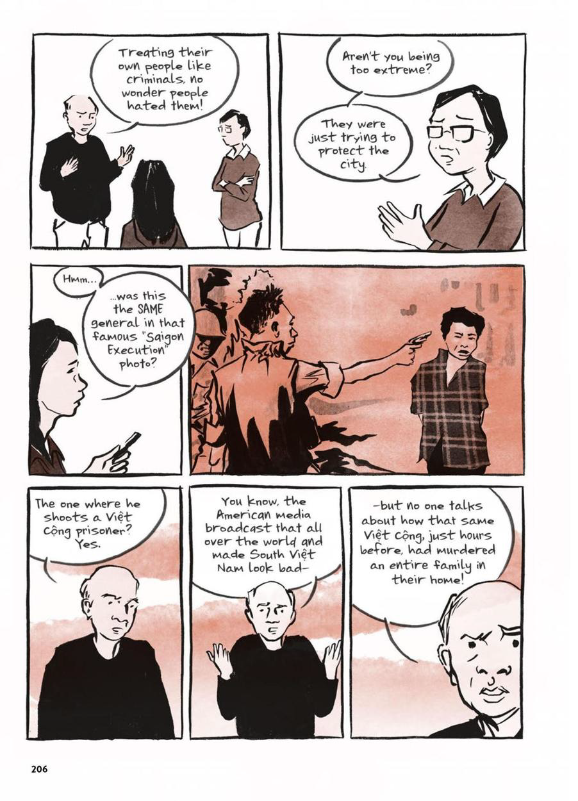
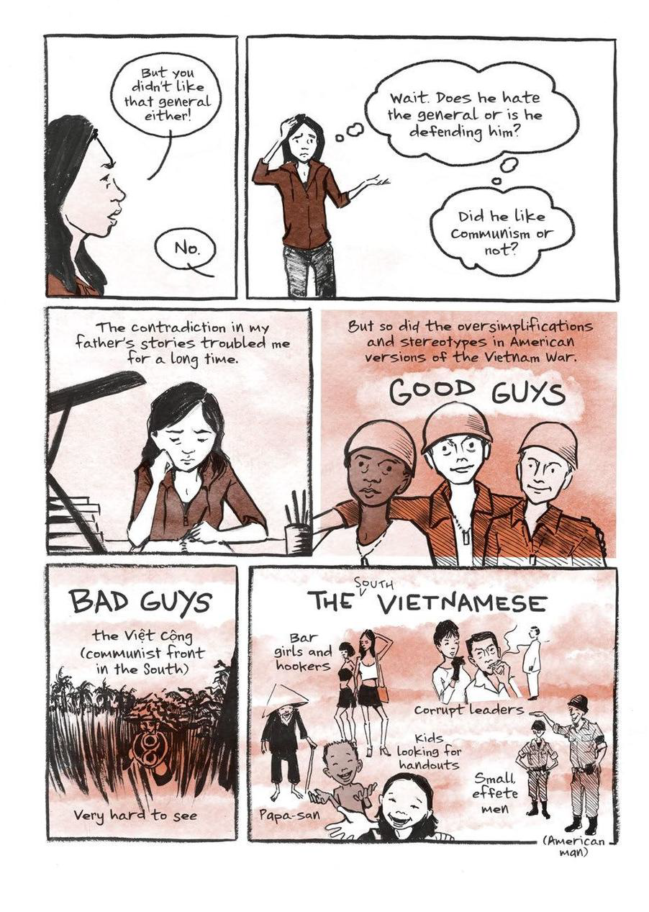
Pages 206-207: Bui's parents argue about how Vietnamese history is portrayed, debating the motives and actions of the Viêt Công. Bui becomes increasingly frustrated, confused, and conflicted about who were the "good guys" and who were the "bad guys" during the war.
|
Self-ReflectionHow does Bui reconcile the differences in memory and discrepancies in varying narrative accounts of not only her own history, but the history of Vietnam? Why do you think she felt that it was important to represent these moments of struggle in her own text? |

This completes the Week 5 Content Module. Thank you for participating!